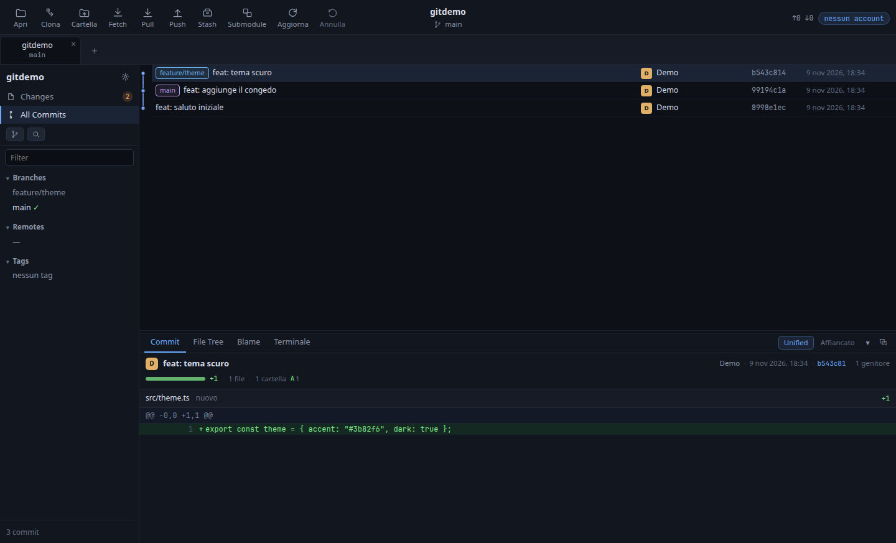
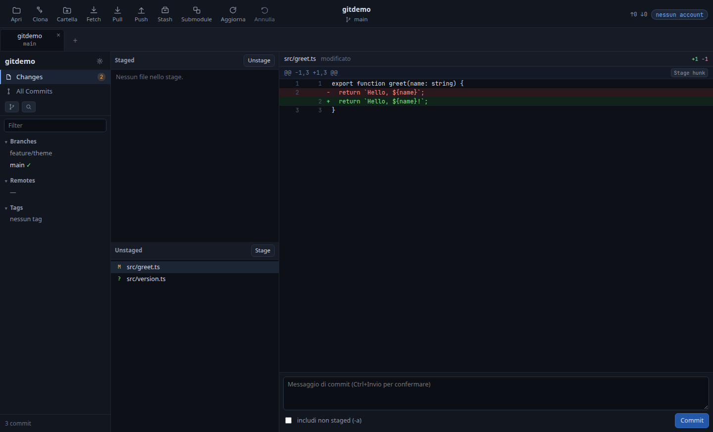
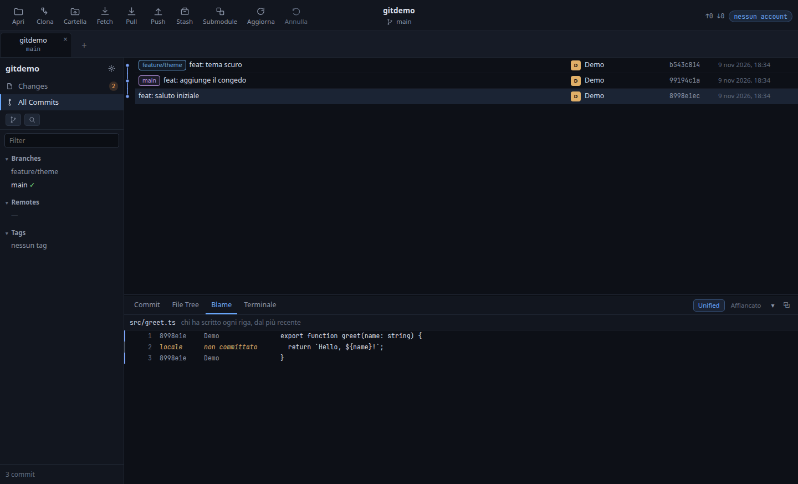

Linux · TypeScript · Electron · GPL-3.0-or-later
La storia del repository, i diff e i commit in una finestra.
GitHandler apre, crea o clona un repository, mostra il grafo della storia e copre il lavoro di ogni giorno: stage anche parziale, commit, merge, rebase, stash, fork, pull request e Actions. La riga di comando resta lì, in un terminale integrato.
01Come si vede

git grep).


02Cosa fa
storia e grafo
Grafo a corsie paginato, ricerca per testo con
author:, file:,
regex:, change:,
diff: e lines:, blame,
reflog.
modifiche
Stage per file, per hunk e per singola riga; scelta multipla con Ctrl e Shift; stash e scarto della sola parte selezionata.
operazioni
Commit anche firmati, checkout di ramo o commit,
pull --ff-only, push mai con forza,
merge, rebase anche interattivo, cherry-pick,
submodule, worktree.
recupero
Undo su commit, checkout, scarto e merge; file non tracciati salvati come oggetti Git; finestra Recupero e controllo della salute del repository.
account e servizi
GitHub, GitLab, Gitea/Forgejo e Bitbucket: token
preso dove c'è già (gh, credential
helper) o dal browser con device flow; fork con
upstream, pull request, Actions e
notifiche di sistema.
per l'AI, se lo vuoi
Server MCP spento di default: si abilita comando per comando, con audit log di quello che viene eseguito.
03Da dove si scarica
Questa è la fonte ufficiale.
I pulsanti qui sopra puntano alle release pubblicate nel
repository
emaxlele/githandler, l'unico posto dove
GitHandler viene distribuito. Ogni file ha il suo
SHA-256 nelle note di rilascio: si verifica con
sha256sum -c. Se l'hai scaricato altrove,
non è questo programma.
Il codice è sotto GPL-3.0-or-later: puoi usarlo, studiarlo, modificarlo e ridistribuirlo, e chi lo ridistribuisce pubblica il sorgente con la stessa licenza. La licenza non copre il nome del prodotto.